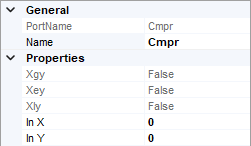
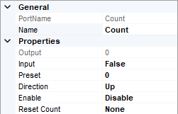
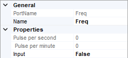
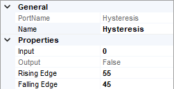
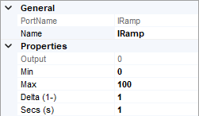

mekiFunction
- Cmpr

Cmpr is used to compare two input values.
- Parameters:
Xgy (boolean) – true when X is greater than Y, else false
Xey (boolean) – true when X is equal to Y, else false
Xly (boolean) – true when X is less than Y, else false
X (real) – Input value
Y (real) – Input value
{kind=link}
- Count

Count is used to count the transistion of a boolean value from false to true.
- Parameters:
Out (integer) – Number of times In has transitioned from false to true
In (boolean) – Input value
Present (integer) – Presets the counter to a specific value, defaults to 0
Dir (boolean) – Count direction, true for up while false for down
Enable (boolean) – To enable In counting
Reset (boolean) – If true, out = preset and no counting. It act as a reset switch
{kind=link}
- Freq

Freq is used to calculate the changing frequency of a boolean value.
- Parameters:
Pps (real) – The changes in the frequency per second
Ppm (real) – The changes in the frequency per minute
In (boolean) – Input value
{kind=link}
- Hysteresis

Hysteresis can output a boolean value according to thier rising edge and falling edge limit.
- Parameters:
In (real) – Input value
Out (boolean) – Output value
Rising_Edge (real) – Rising edge limit, Out become true when In greater than it
Falling_Edge (real) – Falling edge limit, Out become false when In less than it
{kind=link}
- IRamp

IRamp provides linear ramping output based on time set.
- Parameters:
Out (integer) – Output value
Min (integer) – Start value of the ramping
Max (integer) – End value of the ramping
Delta (integer) – Value change every time
Secs (integer, second) – Time intervals very time change
{kind=link}